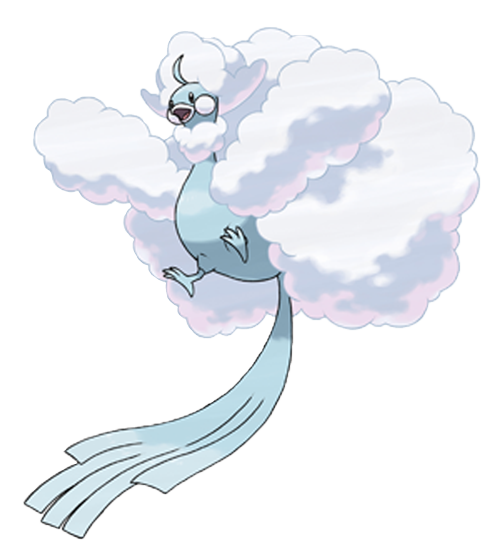
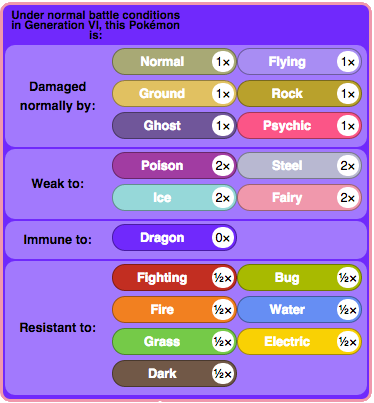
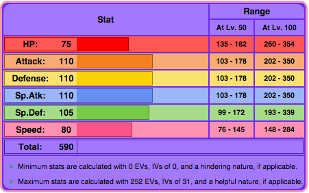
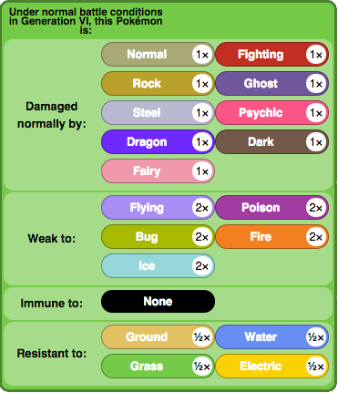
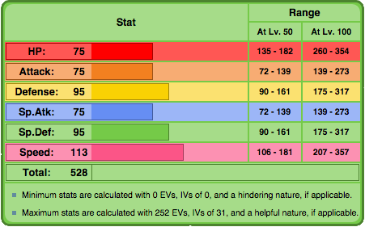
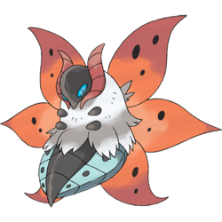
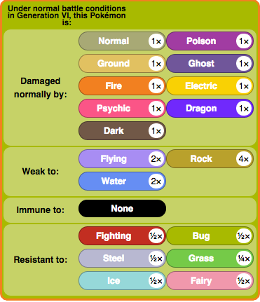
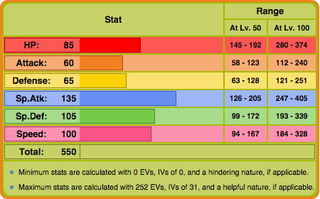

Special Sweepers
Mega Altaria
Mega Altaria can become a evry effective special sweeper because of its helpful ability Pixilate and its vast moveset. It also has reliable defenses to allow a setup for the sweeping. The only setback for Mega Altaria is its Speed, but it can be boosted by Agility. IVs should only excluse Attack, and a Modest or Timid nature is best. EVs should be invest in Special Attack and Speed.
 | Move 1: Hyper Voice | Move 2: Dragon Pulse |
| Move 3: Flamethrower/Heat Wave | Move 4: Roost/Agility |
Serperior

Serperior is one of the most powerful special sweeper because of its ability, Contrary, which reverses all stat changes, including self-inflicted. Due to this, Leaf Storm is its main move that deals massive damage while raising Special Attack by two rather than down two. Because of the giant Special boost, Serperior should be Timid to increase Speed. Coice Specs is an options to add more power, but Life Orbs can be used as well to be able to regain health with Giga Drain or Synthesis.
 | Move 1: Leaf Storm | Move 2: Dragon Pulse |
| Move 3: Giga Drain/Synthesis | Move 4: Hidden Power (Fire/Ground) |
Volcarona
Volcarona is another powerful special sweeper because of its buffing move, Quiver Dance, which raises Special Attack, Special Defense, and Speed. The best item to be held is Life Orbs as well, but Choice Scarf is another option because of its lower Speed, and Fiery Dance can be spammed because of the Special Attack raise. EVs should be invest just the same in Special Attack and Speed, Modest or Timid, but the remaining EVs should be invested in Defense since Sp Defense can be raised by Quiver Dance.
 | Move 1: Fiery Dance | Move 2: Bug Buzz |
| Move 3: Giga Drain/Hurricane | Move 4: Quiver Dance |